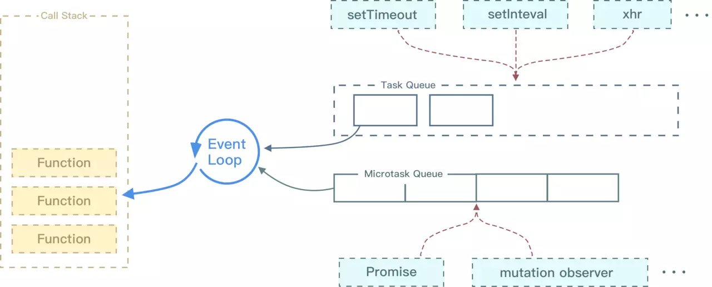
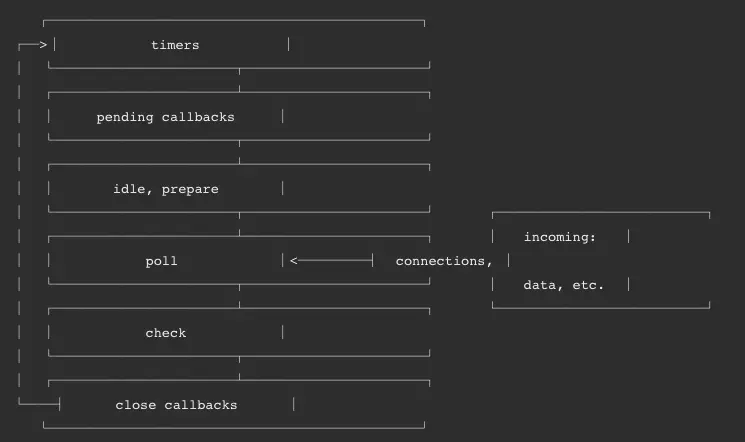
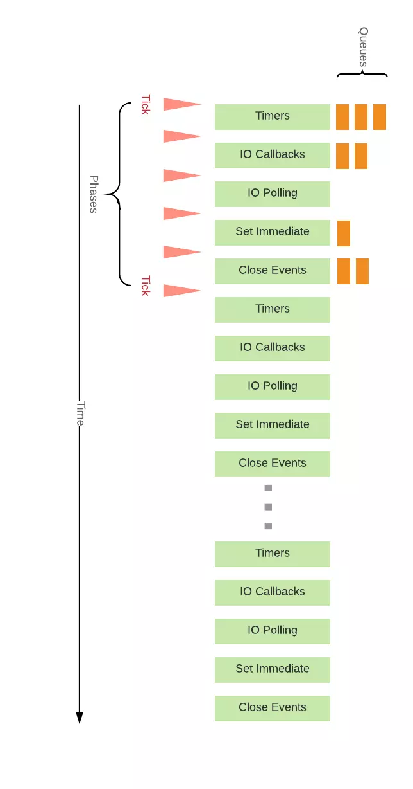

Promise
WHAT
Promise 对象用于表示一个异步操作的最终完成 (或失败), 及其结果值.
异步编程的一种解决方案
Promise可能处于以下三个状态之一：fulfilled、rejected、pending。用户可以对Promise添加回调函数来处理操作成功的结果或失败的原因
WHY
传统的异步编程缺点难以忍受:
- 代码臃肿
- 可读性差
- 耦合度过高，可维护性差
- 代码复用性差
- 只能在回调里处理异常
1 | 请求1(function(请求结果1){ |
HOW
常用API：
Promise.resolve(value)返回一个状态由给定的
value决定的Promise对象。如果该值时theable（即带有then方法的对象），返回的Promise对象的最终状态是由then方法决定；否则（该value为空、基本类型或不带then方法的对象）返回的Promise对象状态为fulfilled，并且将该value传递给对应的then方法。通常，如果不知道一个值是否是Promise对象，可以使用Promsie.resolve(value)来返回一个Promise对象，这样就能将该value以Promise对象形式使用Promise.reject(value)返回一个状态为失败的
Promise对象，并将给定的失败信息传递给对应的出处理方法Promise.race(interable)当
interable参数里的任意一个子promise被执行失败或成功后，父promise马上也会用子promise的成功返回值或失败详情作为参数调用父promsie绑定的相应句柄并返回该promsie对象Promise.all(interable)这个方法返回的是一个新的
promise对象，该promise对象在interable参数对象里所有的promise对象都成功的时候才会触发成功，一旦有任何一个interable里的promise对象失败则立即触发该promise对象的失败。这个新的promise对象在触发成功状态以后，会把一个包含interable里所有promise返回值的数组作为成功回调的返回值，顺序跟interable的顺序保持一致；如果这个新的promise对象出发了失败状态，它会把interable里第一个触发失败的promise对象的错误信息作为它的失败错误信息。Promise.all方法常用于处理多个promise对象的状态集合
1 | const fs = require("fs") |
遍历对象的属性和数组元素的方法
对象：
for循环 👎1
2for (let property in obj)
console.log(property)缺点：会遍历到它的继承属性，在使用之前需要加入
obj.hasOwnProperty(property)Object.keys(obj).forEach()👍1
2
3Object.keys(obj).forEach(property => {
console.log(property)
})Object.keys返回一个有给定对象的自身可枚举属性组成的数组Object.getOwnPropertyNames(obj).forEach👍1
2
3Object.getOwnPropertyNames(obj).forEach(property => {
console.log(property)
})Object.getOwnPropertyNames返回一个由指定对象的所有自身属性的属性名（包括不可枚举属性但不包括Symbol值作为名称的属性）组成的数组Reflect.ownKeys(target)👍基本等同于
Object.getOwnPeopertyNames+Object.getOwnPropertySymbols
数组：各取所需
for循环普通遍历方法，较常用
arr.forEach相较于
for，forEach不可提前结束循环arr.map/reduce
可变对象和不可变对象
可变对象在创建之后是可以被改变的
不可变对象在创建之后是不可以被改变的
- 在
JavaScript中，string和number从设计之初就是不可变的（immediate） - 不可变对象是保持一个对象状态不变，这样的好处是是的开发更加简单、可回溯、测试友好，减少了任何可能的副作用。但是，每当想添加点东西到一个不可变对象里时，它一定是先拷贝已存在的值到新实例里，然后再给新实例添加内容，最后返回新实例。相比可变对象，这势必会有更多内存、计算量消耗
创建一个纯函数（pure function）
1 | const student = { |
同步函数和异步函数
同步函数阻塞，异步函数不阻塞。在同步函数中，语句完成后下一句才执行，在这种情况下，程序可以按照语句的顺序进行精确评估，如果其中一个语句需要很长时间，那么程序的执行会停滞很长时间
异步函数通常接受回调作为参数，在调用异步函数后立即继续执行下一行。回调函数仅在异步操作完成且调用堆栈为空时调用，诸如从web服务器加载数据或查询数据库等重负载操作应该异步完成，以便主线程可以继续执行其他操作而不会出现一直阻塞
在JavaScript中异步函数的解决方案通常有callback、Promise、async/await
JavaScript执行机制
JavaScript的执行与运行
执行和与运行不太相同，在不同环境下，比如Node、浏览器下，JavaScript的执行结果是不一样的；而运行大多是指基于JavaScript引擎，如V8，结果是一致的
关于JavaScript
众所周知，JavaScript是一门单线程、异步执行的语言，虽然在HTML5中提出了web workers（可以理解为浏览器为JavaScript开的“外挂”），但JavaScript是单线程运行的这一核心仍未改变，所有多线程都是通过单线程模拟出来的
JavaScript中的异步 event-loop
JavaScript中的异步主要通过event loop进行模拟当我们执行JavaScript代码的时候其实就是往执行栈中放入函数，那么遇到异步代码怎么办？其实当遇到异步代码时，会被挂起并在需要执行的时候加入到Task（有多种Task）队列中。一旦执行栈为空，event loop就会从Task中拿出需要执行的代码并放入执行栈中执行，所以本质上说JavaScript中的异步还是同步行为
浏览器中的event loop
来自不同的任务源的任务会被分配到不同的Task队列中，任务源可以分为微任务（micro task）和宏任务（macro task）。在ES6规范中，微任务被称为jobs，宏任务被称为task
微任务包括：
precess.nextTick、promise、Mutation Observer宏任务包括：
script、setTimeout、setInterval、setImmediate、I/O、UI Rendering宏任务中包含了
script，因此浏览器会先执行一个宏任务，接下来由异步代码的话才会先执行微任务event loop执行顺序：
- 先执行同步代码，这属于宏任务
- 当执行完所有同步代码后执行栈为空，查询是否有异步代码需要执行
- 执行所有微任务
- 当执行完所有微任务，如有必要会渲染页面
- 然后开始下一轮
event loop，执行宏任务中的异步代码也就是setTimeout（宏任务）中的回调函数


1
2
3
4
5
6
7
8
9
10
11
12
13
14
15
16
17
18
19console.log(1);
setTimeout(() => {
console.log(2);
Promise.resolve().then(() => {
console.log(3);
});
});
new Promise((resolve, reject) => {
console.log(4);
resolve(5);
}).then(data => {
console.log(data);
});
setTimeout(() => {
console.log(6);
});
console.log(7);
// 1 4 7 5 2 3 6Node.js中的event loop
Node.js中的
event loop分为6个阶段，他们会按照顺序反复运行。每当进入某一个阶段的时候都会从对应的回调队列中取出函数去执行。当队列为空或者执行的回调函数数量到达系统设定的阈值，就会进入下一阶段
timers
timers阶段会执行
setTimeout和setinterval回调，并且是由poll阶段控制的。同样在Node.js中定时器指定的事件也不是准确时间，只是尽快执行I/O
I/O阶段会处理一些上一轮循环中少许未执行的I/O回调
idle,prepare
poll
poll是一个至关重要的阶段，在这一阶段中，系统会做两件事情
回到timer阶段执行回调
执行I/O回调，并且在进入该阶段时如果没有设定了timer的话，会发生以下两件事情
- 如果poll队列不为空，会遍历回调队列并同步执行，直到队列为空或者达到系统限制
- 如果poll队列为空
- 如果有
setImmediate回调需要执行，poll阶段会停止并且进入到check阶段执行回调 - 如果没有，会等待回调被加入到队列中并立即执行回调，这里同样会有个超时时间防止一直等待下去
- 如果有
check
执行
setImmediateclose callbacks
执行close事件

ES6的类和ES6的构造函数的区别
在普通使用中没有区别：
1 | function Person(name) { |
主要区别在于类继承上：
1 | function Student(name, id) { |
扩展运算符和剩余参数语句的区别
在函数泛型编码时，ES6的扩展运算符非常有用吗，因为我们可以轻松创建数组和对象的拷贝，而无需使用Object.create、slice或其他函数库。
1 | function test(arr) { |
ES6的剩余参数语句提供了一个简写，允许我们将不定数量的参数表示为一个数组，它就像扩展运算符语法的反面，将数据收集到数组中而不是解构数组。剩余参数语句在函数参数、数组和对象的解构赋值中有很大作用
1 | function test(...numbers) { |
内置类型
JavaScript中分为七种内置类型，其中内置类型又分为两大类型：基本类型和引用类型（对象 Object）
基本类型：null、undefined、boolean、number、string、symbol
其中JavaScript的数字类型是浮点类型的，没有整形。并且浮点类型基于 IEEE 754 标准实现，在使用中会遇到某些 Bug NaN也属于number类型并且NaN并不等于自身
对于基本类型来说，如果使用字面量的方式，那个这个变量只是个字面量，只有在必要的时候才会转换成对应的类型
1 | let a = 111 // 这只是字面量，不是number类型 |
引用类型在使用过程中会遇到深拷贝和浅拷贝问题
Typeof
typeof对于基本类型，除了null都可以显示正确的类型
1 | typeof 1 // number |
typeof对于对象，除了函数都会显示object
1 | typeof [] // object |
关于为什么typeof null == object：在JavaScript的最初版本中，使用的是32为系统，为了性能考虑使用低位存储了变量的类型信息。000开头的代表是对象，然而null表示为全零，所以将它错误的判断为object
如果想得到一个正确的数据类型，使用Object.prototype.toString.call(xxx)
1 | Object.prototype.toString.call([1, 2, 3]) |
instanceof
instance可以正确的判断对象的类型，因为内部机制是通过判断对象的原型链中是不是能正确的找到类型的prototype
1 | function instanceof(left, right) { |
new
在调用new的过程中会发生以下四件事情
- 新生成了一个对象
- 绑定到原型
- 绑定
this - 返回新对象
1 | function create() { |